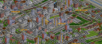
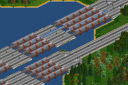
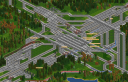

A Glimpse into a Game
Greetings, readers.
This post is dedicated to the baddies of #OpenTTDCoop, the 2*45 curves and realism.
Oh, the 2*45. OMG’d over whenever spotted, as you might expect.
Sometimes those slip by with no one really noticing, and we have a great example of that.



Those poor people must have pretty noisy environment with all those trains, albeit slow, going around and around. Slow, you ask? Yes, due to those 2*45 curves mentioned earlier. The other reason agains 2*45 curves is that they are totally not realistic. (Most) Real trains just can’t bend around themselves in such a small area (3×3 tiles in OTTD).

four thousand. We at #openttdcoop obviously love it, and it makes some amusing contradictions. Gameplay is greater than realism, it seems.

The bridges at the right are a very good example of this. Our goal was to have it realistic, as real Shinkansen rail have loads of bridges and tunnels. I doubt it has double double-rail bridges per direction though. My solution to that would have been a landbridge, due to not looking like arse and not needing doubling for signal blocks. We could have pretended that the landbridges were actual long and large bridges, but no, no landbridges
because the Japanese don’t make those! Fine enough, I didn’t need to build those bridges.

It was originally a T-shaped hub, one branch from the trunk line. Later we decided it wasn’t enough, and needed two branches from the trunk line here, one to each direction. It isn’t that bad really.. Note that the Shinkansen tracks and trains allow for full speed with two-tile curves.

Rebuilding existing SLHs can be done in many ways, from just hacking up that extra entry and exit to major rebuilding and refitting. Another example (by yours truly). Other somewhat amusing SLHs have been built in this game too. I mentioned earlier that the Shinkansen set allows for 2-tile curves.. well, you have a very elaborate example too.


Oh, and if you got all excited about this, don’t hold your breath. I’m not committed to daily or weekly updates 🙂
note: popularity might change my attitude though
Categories: Public Server